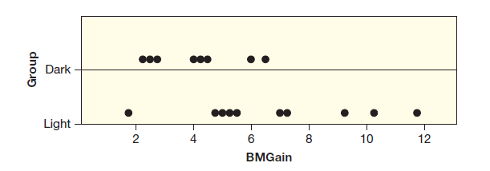
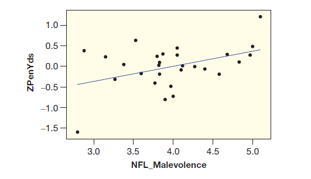
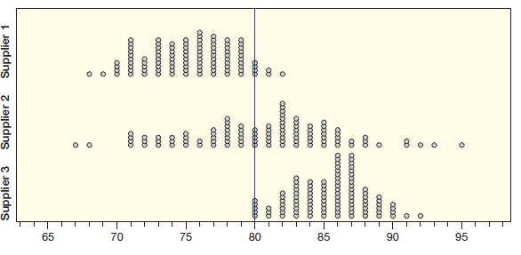
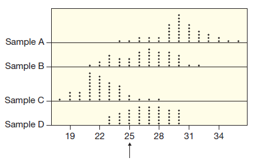
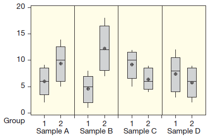
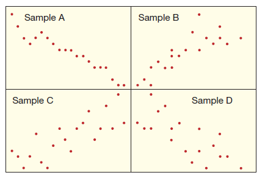

4.1 가설검증 소개
통계적 추론은 모집단에 관한 결론을 도출하기 위하여 표본을 이용하는 것이다. 통계적 추론의 두 분야는 추정(estimation)과 검증(testing)이다. 3장에서 신뢰구간으로 모수를 추정하는 방법을 배웠다. 이번 장에서는 가설검증으로 다음과 같은 질문에 답할 것이다.
- 휴대폰에서 나오는 전자파가 뇌 활동에 영향을 끼칠까?
- 모기는 맥주를 마시는 사람을 더 선호할까?
- 무언가를 기억하고 싶다면 잠자는 것과 카페인 섭취 중 어느 것이 좋은가?
- 밤에 전깃불을 켜놓으면 몸무게가 더 증가할까?
모든 경우에 표본을 활용해서 모집단에 대한 특정 질문에 답할 것이다. 여기서 가설(假說, hypothesis)이란 알려진 사실에 근거하지만 아직 증명되지 않은 것에 대한 생각이나 설명을 말한다. 위 질문은 모두 가설에 해당된다.
데이터 4.1. 여러 연구 결과 사람이 밤에 전깃불에 노출되면 건강에 해롭다는 것이 밝혀졌다. 한 연구팀이 밤에 전깃불을 켜놓으면 쥐의 몸무게가 증가하는지 연구하였다. \(18\)마리의 쥐를 무작위로 두 그룹 중 하나에 배정하였다. Dark 그룹은 밤에 전깃불을 켜놓지 않고 Light 그룹은 밤에 텔레비전 정도의 약한 전깃불이 있다. 아래 데이터는 \(3\)주 후 쥐의 몸무게(BMGain, 단위: 그램) 증가량이다.
- Light: \(9.17\), \(6.94\), \(4.99\), \(1.71\), \(5.43\), \(10.26\), \(4.67\), \(11.67\), \(7.15\), \(5.33\)
- Dark: \(2.83\), \(4.60\), \(6.52\), \(2.27\), \(5.95\), \(4.21\), \(4.00\), \(2.53\)
데이터는 LightatNight에서 얻을 수 있다.
예제 4.1. 위 데이터에서
(1) 이 연구는 실험연구인가? 아니면 관측연구인가? 케이스와 변수는 무엇인가?
(2) 적절한 요약 통계량과 그래프로 두 그룹을 비교하라.
풀이 (클릭하면 풀이가 보입니다)
(1) 쥐들을 무작위로 두 그룹에 배정하였으므로 실험연구이다. 케이스는 \(18\)마리의 쥐이다. 변수는 두 개이다. 하나는 쥐가 속한 그룹으로 범주형 변수이다. 다른 하나는 쥐의 늘어난 몸무게로 양적 변수이다.
(2)
Light 그룹의 표본 평균 \(\bar{x}_L = 6.732\)
Dark 그룹의 표본 평균 \(\bar{x}_D = 4.114\)
아래 그림은 그룹별로 그린 점도표이다.

표본에서 light 그룹 쥐가 dark 그룹의 쥐보다 평균적으로 몸무게가 많이 증가했다. 우리의 관심은 이런 주장을 모집단에서도 할 수 있는가이다. 이 질문에 답하기 위하여 전깃불이 쥐의 몸무게 증가에 영향을 끼치지 않을 때 어떤 일이 벌어지는가 생각해보자.
3장에서 표본 통계량은 변동을 가진다고 배웠다. 표본 평균도 무작위 변동을 가지므로 전깃불이 몸무게 증가에 영향을 끼치지 않더라도 두 그룹의 표본 평균이 정확히 같으리라 기대할 수 없다. 따라서 표본 평균 차이에 대한 두 가지 설명이 가능하다. 하나는 “실제로 밤에 전깃불의 효과 때문에 차이가 발생했다”이다. 다른 하나는 “전깃불의 효과는 없는데 무작위 변동으로 인해 차이가 발생했다”이다. 어느 것이 맞을까? 평균 차이가 얼마나 커야 무작위 변동으로 발생한 것이 아니라고 주장할 수 있을까? 이런 질문을 이 장에서 다룰 것이다.
데이터 4.1에서 표본 정보(\(\bar{x}_L = 6.732\), \(\bar{x}_D = 4.114\))로 모집단에 관한 주장(밤에 전깃불은 쥐의 몸무게를 증가시킨다)을 평가하려고 한다. 모집단에 대한 주장을 평가하기 위하여 표본 데이터를 활용하는 것은 모든 통계적 검증의 본질이다.
확인문제 1. 이 연구는 실험연구인가, 아니면 관측연구인가? 또한, 이 연구에서 케이스와 변수는 무엇인가?
1 실험연구, 케이스는 \(18\)마리의 쥐, 변수는 쥐가 속한 그룹과 몸무게 증가량
2 관측연구, 케이스는 쥐가 속한 그룹, 변수는 몸무게 증가량
3 실험연구, 케이스는 전깃불이 켜진 그룹, 변수는 쥐의 몸무게 변화
4 관측연구, 케이스는 몸무게가 증가한 쥐, 변수는 쥐의 크기와 그룹
확인문제 2. 두 그룹의 쥐 몸무게 증가량을 비교할 때 사용할 수 있는 적절한 요약 통계량과 그래프는 무엇인가?
1 평균, 히스토그램
2 표준편차, 산점도
3 평균, 점도표
4 분산, 막대그래프
확인문제 3. 위 연구에서 두 그룹 간의 평균 차이가 무작위 변동으로 발생한 것인지 아니면 전깃불의 효과 때문인지 판단하려면 무엇을 해야 할까?
1 평균 차이가 무작위 변동에서 벗어날 만큼 커야 하며, 이를 통계적 검증을 통해 확인한다.
2 평균 차이가 매우 작으면 무작위 변동으로 설명할 수 있다.
3 평균 차이가 커도 전깃불의 효과는 확인할 수 없다.
4 표본 데이터를 이용한 검증은 필요 없다.
영가설과 대안가설
3장에서 표본을 사용하여 모수의 신뢰구간을 만들었다. 이 장은 모수에 대하여 대립하는 두 주장 사이에서 결정을 내리기 위하여 표본을 이용하는 방법을 소개한다. 데이터 4.1에서, 한 가설은 “밤에 전깃불을 켜 놓으면 쥐의 몸무게가 증가한다”이고, 다른 가설은 “전깃불은 몸무게 증가와 관계가 없다”이다. 좀 더 구체적으로 두 개의 가설을 모수로 표현해보자.
밤에 전깃불을 켜놓았을 때 증가하는 쥐의 몸무게 양을\(\mu_L\), 어둠 속에서 증가한 쥐의 몸무게 양은\(\mu_D\)라고 표기하자. 우리는\(\mu_L\)과\(\mu_D\)의 차이에 관심이 있다. 전깃불이 몸무게 증가에 영향을 끼치지 않는다면\(\mu_L = \mu_D\)이다. 전깃불이 몸무게 증가에 영향을 끼친다면\(\mu_L > \mu_D\)이다. 둘 중에 어느 것이 맞을까? 표본을 사용하여 이 질문에 답해보자.
모집단에 관한 두 가지 주장 중 하나는 영가설(null hypothesis), 다른 하나는 대안가설(alternative hypothesis)로 부를 것이다. 영가설은\(H_0\), 대안가설은\(H_a\)로 표기한다. 영가설과 대안가설을 마음대로 설정하면 안 된다. 전깃불 예제에서\(\mu_L > \mu_D\)을 주장하려면 상당한 증거가 요구되는데 이러한 가설을 대안가설로 설정한다. 보통 영가설은 “효과가 없다” 또는 “차이가 없다”와 같은 주장이다. 밤에 전깃불이 몸무게 증가에 영향을 끼치는지를 검증할 때, 가설은 다음과 같다.
- 영가설 (\(H_0\)): \(\mu_L = \mu_D\)
- 대안가설 (\(H_a\)): \(\mu_L > \mu_D\)
영가설은 보통 현재의 상황 또는 어떤 흥미로운 일도 일어나지 않는 상황이다. 반면에 대안가설은 연구자가 입증하고 싶은 가설이다. 가설검증은 영가설을 반대하는 증거가 얼마나 강한지 측정하고, 이 증거가 대안가설이 맞다고 결론을 내릴 만큼 충분한지 결정한다.
가설은 모수 \(\mu_L\)과 \(\mu_D\)로 기술하는 것이지 표본 통계량 \(\bar{x}_L\)과 \(\bar{x}_D\)로 하는 것이 아님을 명심해야 한다. 표본에서 전깃불이 있을 때 몸무게가 없을 때보다 더 많이 증가한 것은 이미 알고 있는데 가설검증을 왜 하는가? 중요한 질문은 밤에 전깃불이 있을 때 모든 쥐의 몸무게가 없을 때보다 더 많이 증가한다는 확실한 증거를 표본이 제공하는가이다.
3장에서 여러 종류의 모수에 대한 신뢰구간을 다루었다. 마찬가지로 가설검증도 다양한 모수에 적용할 수 있다. 다음 두 예제는 모비율 하나와 두 모비율 차이에 대한 가설검증을 다룬다.
확인문제 1. 위에서 설명된 예제에서, 영가설과 대안가설은 무엇으로 설정될 수 있는가?
1 영가설: \(\mu_L = \mu_D\), 대안가설: \(\mu_L > \mu_D\)
2 영가설: \(\mu_L > \mu_D\), 대안가설: \(\mu_L = \mu_D\)
3 영가설: \(\mu_L \neq \mu_D\), 대안가설: \(\mu_L = \mu_D\)
4 영가설: \(\mu_L > \mu_D\), 대안가설: \(\mu_L \neq \mu_D\)
확인문제 2. 영가설이 “효과가 없다” 또는 “차이가 없다”는 주장인 이유는 무엇인가?
1 영가설은 기본적인 가정 또는 기존의 믿음을 바탕으로 한다.
2 영가설은 실험을 통해 입증하려는 가설이기 때문이다.
3 대안가설을 증명하려면 영가설을 부정하는 것이 중요하다.
4 영가설은 실험 결과에 따라 수정될 수 있다.
확인문제 3. 가설검증에서 중요한 점은 무엇인가?
1 영가설을 반대하는 증거가 얼마나 강한지 측정하고, 그 증거가 대안가설을 입증할 수 있을 만큼 충분한지를 판단한다.
2 표본 통계량을 사용하여 영가설을 입증하려고 한다.
3 가설검증은 대안가설을 검증하기 위해 반드시 수행해야 한다.
4 표본에서 영가설이 맞다는 것을 확인하는 것이 중요한 절차이다.
예제 4.2. 레스토랑에서 남은 음식을 포장한 후에 놓고 가는 손님의 비율은 대략 \(30\%\)라고 레스토랑 주인이 주장한다. 이 주장이 맞는지 확인하기 위하여 포장해 달라고 하는 손님 중에 \(120\)명을 무작위로 추출하였다. 모수를 정의하고 영가설과 대안가설을 기술하라.
풀이 (클릭하면 풀이가 보입니다)
모수 \(p\)는 포장을 요구한 모든 손님 중에서 포장된 음식을 놓고 간 사람의 비율이다. \(p\)가 \(30\%\)와 다른지를 검증하기 위한 가설은 다음과 같다.
- \(H_0: p = 0.30\)
- \(H_a: p \neq 0.30\)
표본 통계량 \(\hat{p}\)은 정확히 \(0.3\)은 아닐 것이다. 문제는 \(\hat{p}\)이 \(0.3\)에서 얼마나 멀리 떨어져 있어야 모수 \(p\)가 \(0.3\)이 아니라고 결론을 내릴 수 있는가이다.
예제 4.3. 한 번 마약에 빠지면 헤어나기 어렵다. 마약 중독에서 벗어나더라도 다시 마약에 빠지는 경우가 많다. 한 연구팀이 개발한 치료약이 재발률을 낮추는지 검증하려고 한다. 무작위 이중맹(double blinded) 실험으로 치료약을 먹는 처리군(treatment group)의 재발률과 플라시보 약을 먹는 대조군(control group)의 재발률을 비교한다. 치료약은 마약 중독의 재발률을 낮추는 데 효과가 있을까? 영가설과 대안가설을 모수로 표현하라.
풀이 (클릭하면 풀이가 보입니다)
비율 차이에 대한 가설검증이다. 두 개의 모비율 \(p_D\)와 \(p_C\)는 다음과 같이 정의한다.
- \(p_D\) = 치료약을 먹은 후 마약 중독에 다시 빠진 비율
- \(p_C\) = 플라시보 약을 먹은 후 마약 중독에 다시 빠진 비율
치료약을 먹은 그룹의 재발률이 대조군보다 낮은가를 검증하는 것이므로 영가설과 대안가설은 다음과 같이 설정한다.
- \(H_0: p_D = p_C\)
- \(H_a: p_D < p_C\)
여기서 가설은 모수로 표현하는 것이지 표본 통계량으로 표현하는 것이 아님을 명심하자.
일반적으로 영가설에는 ‘같다(=)’라는 표현이, 대안가설에는 ’작다(<)’, ‘다르다(≠)’, ’크다(>)’라는 표현이 많다. 가설검증은 영가설을 반대하는 증거를 측정하므로 ’같다’라는 가설을 반대하는 증거를 평가하기가 더 쉽다.
’차이가 없다’라는 영가설은 모두 같지만 대안가설의 형태는 문제에 따라 다르다. 따라서 항상 영가설과 대안가설은 데이터를 수집하기 전에 결정되어야 한다.
데이터 4.1에서 영가설을 ’평균이 같다’라는 다소 추상적인 표현보다는 ’밤에 전깃불은 쥐의 몸무게 증가에 영향을 끼치지 않는다’라는 구체적인 표현이 더 쉽게 느껴질 수 있다. 하지만 이 책은 간결성을 위해 가설을 모수로 표현할 것이다.
확인문제 1. 다음 중 영가설과 대안가설이 정확히 무엇인지 설명한 것은?
1 영가설: \(p = 0.30\), 대안가설: \(p \neq 0.30\)
2 영가설: \(p \neq 0.30\), 대안가설: \(p = 0.30\)
3 영가설: \(p > 0.30\), 대안가설: \(p < 0.30\)
4 영가설: \(p < 0.30\), 대안가설: \(p > 0.30\)
확인문제 2. 영가설과 대안가설에서 ’같다’는 표현은 어떤 의미를 가질까?
1 영가설은 ’차이가 없다’는 가정에 따라, 대안가설은 그에 반하는 증거를 평가한다.
2 영가설은 ’차이가 있다’는 가정에 따라, 대안가설은 그에 반하는 증거를 평가한다.
3 대안가설은 ’효과가 없다’는 가정에 따라, 영가설은 그에 반하는 증거를 평가한다.
4 대안가설은 ’효과가 있다’는 가정에 따라, 영가설은 그에 반하는 증거를 평가한다.
확인문제 3. 가설검증에서 중요한 점은 무엇인가?
1 영가설을 반대하는 증거가 얼마나 강한지 평가하고, 그 증거가 충분한지를 판단한다.
2 영가설을 지지하는 증거를 찾기 위해 실험을 설계한다.
3 영가설을 기각할 증거가 없을 때까지 실험을 반복한다.
4 대안가설이 맞다는 것을 확실히 증명하기 위한 실험을 설계한다.
영가설을 반대하고 대안가설을 지지하는 증거
가설검증은 대안가설을 지지하는 증거를 찾는다. 영가설을 반대하고 대안가설을 지지하는 증거를 표본이 충분히 제공하는지를 평가하는 것이 가설검증이다.
예제 4.4. 예제 4.2는 레스토랑에서 남은 음식을 포장한 후 잊고 놓고 간 손님의 비율이 \(30\%\)인지를 검증하는 문제이다. 표본은 무작위로 추출한 \(120\)명이다. 다음 각 상황에서 영가설을 반대하고 대안가설을 지지하는 증거가 얼마나 강한지 논하라. 어느 것이 가장 강한 증거인가? 또 어느 것이 가장 약한 증거인가?
(1) \(120\)명 중에 \(36\)명이 잊은 경우
(2) \(120\)명 중에 \(37\)명이 잊은 경우
(3) \(120\)명 중에 \(90\)명이 잊은 경우
(4) \(120\)명 중에 \(27\)명이 잊은 경우
풀이 (클릭하면 풀이가 보입니다)
가설은 다음과 같다.
- \(H_0: p = 0.30\)
- \(H_a: p \neq 0.30\)
표본 크기 \(n = 120\)은 모두 같으므로, 표본 비율이 \(0.3\)에서 멀리 떨어져 있을수록 영가설을 반대하고 대안가설을 지지하는 강한 증거가 된다.
(1) 표본 비율 \(\hat{p} = 36/120 = 0.30\) 이다. 모비율 \(0.3\)과 정확히 같으므로 영가설을 반대하는 증거가 전혀 없다.
(2) 표본 비율 \(\hat{p} = 37/120 = 0.308\) 이다. 모비율 \(0.3\)과 아주 조금 다르므로 영가설을 반대하는 증거는 매우 약하다.
(3) 표본 비율 \(\hat{p} = 90/120 = 0.75\) 이다. 모비율 \(0.3\)과 매우 멀리 떨어져 있으므로 영가설을 반대하고 대안가설을 지지하는 증거는 아주 강하다.
(4) 표본 비율 \(\hat{p} = 27/120 = 0.225\) 이다. 이 경우에는 결론이 명확하지 않다. 다음 절에서 이러한 문제를 해결하는 방법을 배울 것이다.
(3) 가 대안가설을 지지하는 제일 강한 증거를 제시한다. 반면에 (1)는 전혀 증거를 제시하지 못한다.
확인문제 1. 다음 중 영가설을 반대하고 대안가설을 지지하는 증거가 가장 강한 경우는?
1 \(120\)명 중 \(36\)명이 잊은 경우
2 \(120\)명 중 \(37\)명이 잊은 경우
3 \(120\)명 중 \(90\)명이 잊은 경우
4 \(120\)명 중 \(27\)명이 잊은 경우
확인문제 2. 영가설을 반대하고 대안가설을 지지하는 증거가 가장 약한 경우는?
1 \(120\)명 중 \(36\)명이 잊은 경우
2 \(120\)명 중 \(37\)명이 잊은 경우
3 \(120\)명 중 \(90\)명이 잊은 경우
4 \(120\)명 중 \(27\)명이 잊은 경우
확인문제 3. 다음 중 표본 비율이 모비율과 가장 가까운 경우는?
1 \(120\)명 중 \(36\)명이 잊은 경우
2 \(120\)명 중 \(37\)명이 잊은 경우
3 \(120\)명 중 \(90\)명이 잊은 경우
4 \(120\)명 중 \(27\)명이 잊은 경우
데이터 4.2. 한 연구팀이 미식 축구팀의 유니폼과 공격성이 관계가 있는지를 연구하였다. 연구 참여자는 각 축구팀에 관한 정보 없이 선수가 입은 유니폼을 평가한다. 평가 항목은 수비/공격, 신사/비신사 등이다. 이 점수의 평균을 적의(敵意, malevolence) 점수라고 하자. 공격성 점수는 게임 중 벌칙 수를 표준화한 \(z\) 점수이다. 데이터는 여기 에서 얻을 수 있다. 아래 산점도에 \(28\)개 축구팀의 적의 점수와 공격성 점수를 회귀선과 같이 표현하였다. 그래프는 두 변수 사이에 약한 양의 상관관계를 보인다. 표본 상관관계 \(r = 0.43\)이다. 이것으로 양의 상관관계가 있다고 결론 내릴 수 있을까?

예제 4.5. 모수를 정의하고 영가설과 대안가설을 기술하라.
풀이 (클릭하면 풀이가 보입니다)
모수는 유니폼의 적의 점수와 벌칙 점수의 상관관계\(\rho\)이다. 상관관계가 양수인가를 검증하는 것이므로 가설은 다음과 같다.
- \(H_0: \rho = 0\)
- \(H_a: \rho > 0\)
유니폼과 벌칙 점수 사이에 상관관계가 없더라도 표본 상관관계가 정확히 0이라고 기대할 수 없다. 표본 상관관계는 변동하기 때문이다. 여기서 중요한 질문은 표본 통계량(위에서 표본 상관관계)이 0에서 얼마나 멀리 떨어져 있어야 우연히 발생했다고 판단하기 어려운가이다. 표본 상관관계 \(r = 0.43\)은 영가설\(\rho = 0\)이 사실일 때 우연히 발생했다고 하기엔 너무 큰 값인가?
예제 4.6. 표본 상관관계 \(r = 0.43\)이 영가설을 반대하고 대안가설을 지지하는 확실한 증거라면, 스포츠 유니폼 맥락에서 무엇을 의미하는가?
풀이 (클릭하면 풀이가 보입니다)
표본이 영가설을 반대하고 대안가설을 지지한다면 실제 상관관계는 양이라는 확실한 증거를 얻은 것이다. 적의를 보이는 유니폼을 입은 스포츠팀이 더 많은 벌칙을 범하는 경향이 있음을 의미한다. 또한 실제 상관관계\(\rho\)가 0이라면 표본 상관관계 \(r = 0.43\)만큼 큰 값은 우연히 얻기 어렵다는 뜻이다.
확인문제 1. 다음 중 영가설과 대안가설을 올바르게 설정한 것은?
1 \(H_0:\rho = 0\),\(H_a:\rho \neq 0\)
2 \(H_0:\rho = 0\),\(H_a:\rho < 0\)
3 \(H_0:\rho = 0\),\(H_a:\rho > 0\)
4 \(H_0:\rho \neq 0\),\(H_a:\rho = 0\)
확인문제 2. 표본 상관관계 \(r=0.43\)이 영가설을 반대하고 대안가설을 지지하는 확실한 증거라면 무엇을 의미하는가?
1 유니폼의 디자인은 공격성 점수와 관련이 없음을 의미한다.
2 적의 점수를 보이는 유니폼을 입은 스포츠팀이 더 많은 벌칙을 범하는 경향이 있음을 의미한다.
3 유니폼의 디자인은 공격성 점수와 관련이 없지만, 우연히 상관관계가 생겼다고 판단한다.
4 표본 상관관계가 \(0.43\)이라는 값은 우연히 발생할 가능성이 매우 높다는 의미다.
확인문제 3. 영가설에서 상관관계가 0이라는 주장을 반박하려면, 표본 상관관계가 0에서 얼마나 멀리 떨어져 있어야 할까?
1 표본 상관관계가 \(0.43\) 이상일 경우
2 표본 상관관계가 \(0.30\) 이상일 경우
3 표본 상관관계가 \(0.10\) 이상일 경우
4 표본 상관관계가 \(0.50\) 이상일 경우
예제 4.7. 한 레스토랑 체인은 닭고기를 몇몇 식품 회사로부터 공급 받는다. 레스토랑 체인은 표본을 무작위로 뽑아 식품 회사가 공급하는 모든 닭고기의 평균 비소 농도를 추정한다. 평균 비소 농도가 \(80\) ppb (parts per billion)를 넘는다는 증거가 충분할 때 해당 회사와 납품 계약을 취소한다. 모수를 정의하고 영가설과 대안가설을 기술하라.
풀이 (클릭하면 풀이가 보입니다)
관심 있는 모수는 식품 회사가 공급하는 모든 닭고기의 평균 비소 농도\(\mu\)이다. 모수\(\mu\)가 80보다 큰지 검증하므로 가설은 다음과 같다.
- \(H_0:\mu = 80\)
- \(H_a:\mu > 80\)
모평균이 80보다 큰가에 대한 증거를 찾는 것이므로 대안가설이\(H_a: \mu > 80\)임은 명확하다. 영가설을\(H_0: \mu \le 80\)로 설정할 수도 있다. 평균 비소 농도가 80보다 작으면 더 좋으므로 납품이 취소되지 않는다. 표본 평균이 영가설\(H_0: \mu = 80\)를 반대하는 충분한 증거라면, 이 증거는\(H_0: \mu = 78\) 또는 \(H_0: \mu = 75\)에 대해서는 더 많은 증거를 제시한다. 이런 이유로 영가설은 등호를 사용한다.
예제 4.8. 레스토랑 체인은 \(3\)개의 식품 회사가 공급한 닭고기 중에서 무작위 표본을 뽑아 비소 농도를 검사했다. 데이터를 그래프로 표시한 그림이 아래에 있다.

(1) 어떤 공급자의 표본이 대안가설을 지지하는 증거가 가장 강한가?
(2) 대안가설을 지지하는 증거가 거의 없는 표본은 어느 것인가?
풀이 (클릭하면 풀이가 보입니다)
(1) 공급자 3이 평균 비소 농도가 80보다 크다는 대안가설을 지지하는 증거가 가장 강하다. 모든 비소 농도가 최소한 80 이상이기 때문이다.
(2) 공급자 1이 평균 비소 농도가 80 이상이라는 대안가설에 대한 증거가 가장 약하다. 표본 평균이 80 이하이기 때문이다.
이 절에서 모집단에 대한 두 가설이 있을 때, 표본은 두 가설 중에 어느 것을 지지하는 지를 평가하는 방법을 배웠다. 영가설이 참일 때 우연히 발생하기 어려운 표본을 얻었다면, 대안가설이 참이라는 증거가 된다. 아직 우리는 “영가설이 참인 상황에서 우연히 발생하기 어렵다”는 것을 어떻게 결정하는지를 다루지 않았다. 이것이 다음 절의 주제이다.
확인문제 1. 다음 중 적절한 영가설과 대안가설의 조합은 무엇인가?
1 \(H_0:\mu = 80\),\(H_a:\mu \neq 80\)
2 \(H_0:\mu \le 80\),\(H_a:\mu > 80\)
3 \(H_0:\mu = 80\),\(H_a:\mu < 80\)
4 \(H_0:\mu \ge 80\),\(H_a:\mu < 80\)
확인문제 2. 다음 중 공급자 3의 표본이 대안가설을 지지하는 증거가 가장 강한 이유는 무엇인가?
1 표본 평균이 80 이하이기 때문이다.
2 모든 비소 농도가 80 이상이기 때문이다.
3 표본 평균이 정확히 80이다.
4 표본 평균이 75 이상이고, 80 이하이다.
확인문제 3. 다음 중 공급자 1의 표본이 대안가설을 지지하는 증거가 가장 약한 이유는 무엇인가?
1 표본 평균이 80 이상이다.
2 표본 평균이 80 이하이다.
3 표본 평균이 정확히 80이다.
4 표본 평균이 70 이하이다.
학습 내용 정리
다음 사항을 이해하거나 해결하는 능력이 있어야 한다.
- 가설검증이 언제 그리고 왜 필요한지 알고 있다.
- 모수를 정의하고 영가설과 대안가설을 기술할 수 있다.
- 표본 데이터가 영가설이 아닌 대안가설을 지지하는 충분한 증거를 제공하는지 검사하는 것이 가설검증이다.
- 같은 가설에 대한 표본이 여러 개 있을 때 증거의 강도를 서로 비교할 수 있다.
통계적 검증
표본에서 얻은 결과가 모집단의 특성에 관한 결론을 내릴 만큼 충분한 증거인지 결정할 때 통계적 검증을 이용한다.
영가설과 대안가설
영가설은 “효과가 없다” 또는 “차이가 없다”와 같은 주장이다. 대안가설은 충분한 증거를 찾아야 하는 주장이다. 가설검증은 표본이 영가설을 반박하고 대안가설을 지지하는 충분한 증거를 제시하는지를 평가한다.
영가설과 대안가설 기술하기
영가설과 대안가설은 모수에 관한 것이지 표본 통계량에 관한 것이 아니다. 일반적으로 영가설에는 등호(=)가 있다. 반면에 대안가설은 문제에 따라 작다(<), 다르다(≠), 크다(>) 등의 기호가 들어간다.
확인문제 1. 다음 중 가설검증에서 영가설과 대안가설에 대한 설명으로 옳지 않은 것은 무엇인가?
1 영가설은 보통 “효과가 없다” 또는 “차이가 없다”는 주장이다.
2 대안가설은 영가설을 반박하는 주장이다.
3 영가설은 일반적으로 등호(=)가 포함된다.
4 대안가설은 항상 “효과가 있다” 또는 “차이가 있다”는 주장이다.
확인문제 2. 가설검증에서 표본 데이터가 영가설을 지지할 때의 결론은 무엇인가?
1 영가설을 기각한다.
2 대안가설을 기각한다.
3 영가설을 기각할 수 없다.
4 대안가설을 지지한다.
확인문제 3. 다음 중 영가설과 대안가설을 정의하는 올바른 방법은 무엇인가?
1 영가설은 모수에 관한 것으로, 대안가설은 표본 통계량에 관한 것이다.
2 영가설과 대안가설은 모두 표본 통계량에 관한 것이다.
3 영가설은 표본 통계량에 관한 것이며, 대안가설은 모수에 관한 것이다.
4 영가설과 대안가설 모두 모수에 관한 것이다.
과제 4.1. 다음 (1)~(4)는 통계적 검증의 상황과 가상적인 몇 개의 표본을 제시한다. 각 상황에 대하여 a 기술한 주장에 가장 강한 증거를 제공하는 표본과 b 증거를 거의 제공하지 못하는 표본을 고르시오.
통계학 중간시험 점수의 모평균이 \(25\)보다 큰가를 검증한다.

(1)-a 가장 강한 증거를 제공하는 표본은?
1 표본 A
2 표본 B
3 표본 C
4 표본 D
(1)-b 증거를 거의 제공하지 못하는 표본은?
1 표본 A
2 표본 B
3 표본 C
4 표본 D
레스토랑 #1의 평균 서비스 시간이 레스토랑 #2의 평균 서비스 시간보다 작은가를 검증한다. 표본 크기는 모두 같고 표본 평균은 상자 안의 검은색 점이다.

(2)-a 가장 강한 증거를 제공하는 표본은?
1 표본 A
2 표본 B
3 표본 C
4 표본 D
(2)-b 증거를 거의 제공하지 못하는 표본은?
1 표본 A
2 표본 B
3 표본 C
4 표본 D
모집단에서 학생의 시험 점수 등급과 비디오 게임 시간의 상관관계가 음(−)인지를 검증한다.

(3)-a 가장 강한 증거를 제공하는 표본은?
1 표본 A
2 표본 B
3 표본 C
4 표본 D
(3)-b 증거를 거의 제공하지 못하는 표본은?
1 표본 A
2 표본 B
3 표본 C
4 표본 D
캐나다의 수도 이름을 알고 있는 미국 시민의 비율이 \(0.75\)보다 큰지를 검증한다. 표본 크기와 캐나다 수도 이름을 아는 사람 수가 데이터로 주어졌다.
- 표본 A: \(40\)명 중 \(31\)명
- 표본 B: \(40\)명 중 \(34\)명
- 표본 C: \(40\)명 중 \(27\)명
- 표본 D: \(40\)명 중 \(38\)명
(4)-a 가장 강한 증거를 제공하는 표본은?
1 표본 A
2 표본 B
3 표본 C
4 표본 D
(4)-b 증거를 거의 제공하지 못하는 표본은?
1 표본 A
2 표본 B
3 표본 C
4 표본 D
과제 4.2. 다음 각 가설이 통계적 검증에서 유효한 가설이면 참(T), 그렇지 않으면 거짓(F)으로 답하시오.
(1) \(H_0: \mu = 15\) vs \(H_a: \mu \neq 15\) — 유효한 가설인가?
1 참(T)
2 거짓(F)
(2) \(H_0: p \neq 0.5\) vs \(H_a: p = 0.5\) — 유효한 가설인가?
1 참(T)
2 거짓(F)
(3) \(H_0: p_1 < p_2\) vs \(H_a: p_1 > p_2\) — 유효한 가설인가?
1 참(T)
2 거짓(F)
(4) \(H_0: \bar{x}_1 = \bar{x}_2\) vs \(H_a: \bar{x}_1 \neq \bar{x}_2\) — 유효한 가설인가?
1 참(T)
2 거짓(F)
(5) \(H_0: \rho = 0\) vs \(H_a: \rho < 0\) — 유효한 가설인가?
1 참(T)
2 거짓(F)
(6) \(H_0: \hat{p} = 0.3\) vs \(H_a: \hat{p} \neq 0.3\) — 유효한 가설인가?
1 참(T)
2 거짓(F)
(7) \(H_0: \mu_1 \neq \mu_2\) vs \(H_a: \mu_1 = \mu_2\) — 유효한 가설인가?
1 참(T)
2 거짓(F)
(8) \(H_0: p = 25\) vs \(H_a: p \neq 25\) — 유효한 가설인가?
1 참(T)
2 거짓(F)
과제 4.3. 맥주를 마시면 모기가 더 달라붙을까? 실험 참가자 \(43\)명을 무작위로 두 그룹으로 나누어 한 그룹(\(25\)명)은 맥주를 \(1\)리터 마시고 다른 그룹(\(18\)명)은 물을 \(1\)리터 마셨다. 모기가 얼마나 달라붙는지 마시기 전과 후 두 번 측정하였다. 모기를 풀어 놓고 실험 참가자에게 달라붙는 모기를 잡았다. 맥주 그룹에서 마시기 전은 \(434\)마리, 마신 후에는 \(590\)마리이다. 물 그룹은 마시기 전 \(337\)마리, 마신 후에는 \(345\)마리이다.
(1)-a 맥주 그룹의 평균 모기 수가 물 그룹보다 더 많은지 검증할 때 영가설은? (맥주 그룹 평균 \(\mu_b\), 물 그룹 평균 \(\mu_w\))
1 \(H_0: \mu_b = \mu_w\)
2 \(H_0: \mu_b < \mu_w\)
3 \(H_0: \mu_b > \mu_w\)
4 \(H_0: \mu_b \neq \mu_w\)
5 \(H_a: \mu_b = \mu_w\)
6 \(H_a: \mu_b < \mu_w\)
7 \(H_a: \mu_b > \mu_w\)
8 \(H_a: \mu_b \neq \mu_w\)
(1)-b 대안가설은?
1 \(H_0: \mu_b = \mu_w\)
2 \(H_0: \mu_b < \mu_w\)
3 \(H_0: \mu_b > \mu_w\)
4 \(H_0: \mu_b \neq \mu_w\)
5 \(H_a: \mu_b = \mu_w\)
6 \(H_a: \mu_b < \mu_w\)
7 \(H_a: \mu_b > \mu_w\)
8 \(H_a: \mu_b \neq \mu_w\)
(2)-a 맥주를 마시기 전, 맥주 그룹의 \(1\)인당 평균 모기 수는? (반올림하여 소수점 이하 \(2\)자리)
정답: 17.36
(2)-b 물을 마시기 전, 물 그룹의 \(1\)인당 평균 모기 수는? (반올림하여 소수점 이하 \(2\)자리)
정답: 18.72
(2)-c 두 표본 평균은 다른가?
1 다르다
2 같다
(2)-d 두 표본 평균의 차이는 우연히 발생한 것이라고 간주할 수 있는가?
1 있다
2 없다
(3)-a 맥주를 마신 후, 맥주 그룹의 \(1\)인당 평균 모기 수는? (반올림하여 소수점 이하 \(2\)자리)
정답: 23.60
(3)-b 물을 마신 후, 물 그룹의 \(1\)인당 평균 모기 수는? (반올림하여 소수점 이하 \(2\)자리)
정답: 19.17
(3)-c 두 표본 평균은 다른가?
1 다르다
2 같다
(3)-d 두 표본 평균의 차이는 우연히 발생한 것이라고 간주할 수 있는가?
1 있다
2 없다
(4) 위 (3)에서 차이가 대안가설을 지지하는 확실한 증거라면, 맥주와 모기에 대하여 내릴 수 있는 결론은?
1 맥주 마시는 것과 모기는 관계가 없다.
2 맥주를 마신다고 모기가 더 달라붙는 것은 아니다.
3 모기는 맥주를 마신 사람을 더 선호한다.
(5) 위 (3)에서 차이가 대안가설을 지지하는 확실한 증거라면, “맥주가 모기를 유혹한다”는 결론이 가능한가?
1 관측연구이므로 가능하지 않다.
2 관측연구이므로 가능하다.
3 실험연구이므로 가능하지 않다.
4 실험연구이므로 가능하다.